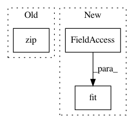

71b1e873e70dca43cd12870d4c0f497015f41970,examples/combine/plot_comparison_combine.py,,,#,106
Before Change
X, y = create_dataset(n_samples=1000, weights=(0.1, 0.2, 0.7))
ax_arr = ((ax1, ax2), (ax3, ax4), (ax5, ax6))
for ax, sampler in zip(
ax_arr,
(
SMOTE(random_state=0),
SMOTEENN(random_state=0),
SMOTETomek(random_state=0),
),
):
clf = make_pipeline(sampler, LinearSVC())
clf.fit(X, y)
plot_decision_function(X, y, clf, ax[0])
After Change
fig, axs = plt.subplots(3, 2, figsize=(15, 25))
for ax, sampler in zip(axs, samplers):
clf = make_pipeline(sampler, LinearSVC()).fit(X, y)
plot_decision_function(X, y, clf, ax[0])
plot_resampling(X, y, sampler, ax[1])
fig.tight_layout()
In pattern: SUPERPATTERN
Frequency: 3
Non-data size: 3
Instances
Project Name: scikit-learn-contrib/imbalanced-learn
Commit Name: 71b1e873e70dca43cd12870d4c0f497015f41970
Time: 2021-02-17
Author: g.lemaitre58@gmail.com
File Name: examples/combine/plot_comparison_combine.py
Class Name:
Method Name:
Project Name: ntucllab/libact
Commit Name: cb347641837feb9f651038c2f88317563a347627
Time: 2015-12-17
Author: yangarbiter@gmail.com
File Name: libact/models/svm.py
Class Name: SVM
Method Name: train
Project Name: IndicoDataSolutions/finetune
Commit Name: 244c6805387c01208c0307fcf8895271074dde94
Time: 2020-04-23
Author: benlt@hotmail.co.uk
File Name: finetune/datasets/reuters.py
Class Name:
Method Name: